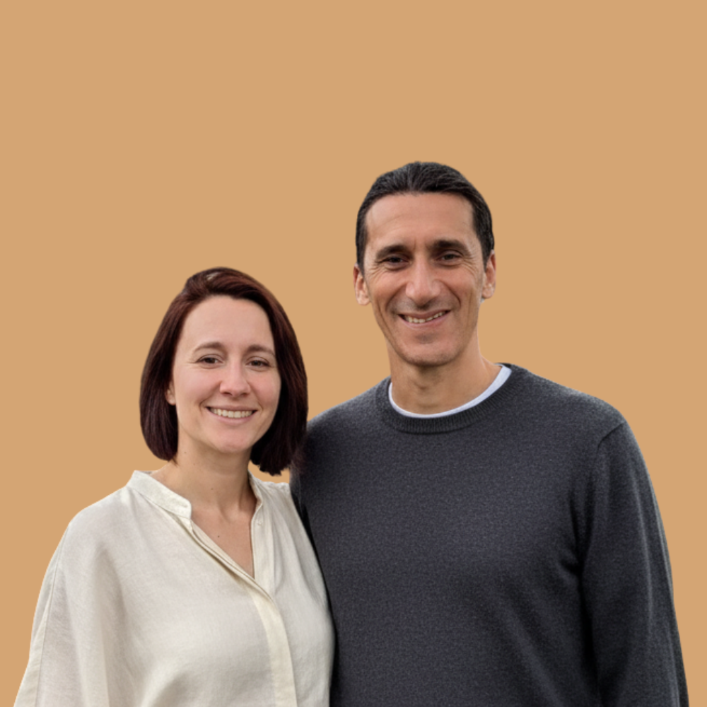

Sacred Circle - a small-group coaching space for people doing deep inner work who want the changes to actually show up on a regular Tuesday. By Anna and Dario.
See Current CohortApril to June 2026
Live sessions on Thursdays at 6:30 PM Central European Time.
April 23 and 30 / May 7, 14, 21, 28 / June 4
If this cohort doesn't work for you, leave your email and I'll let you know when the next one opens.

Hi, we're Anna and Dario.
Dario is an organizational psychologist and facilitator with over 20 years working with groups and communities. Trained in South America in traditional practices and rites of passage, he has been holding ceremony space internationally for 20 years.
Anna is a certified Deep Transformational Coach, Level 3 IFS Practitioner, and former startup leader. Always curious, always doing her own inner work.
Here's what we kept noticing.
People would have profound experiences in ceremony, retreat, or deep group work. Real openings. Then a few weeks later, they'd be back in the same loops. The insight was genuine. But it faded. People going deeper into the next experience, hoping it would make it stick. Or cycling through different modalities, looking for what would make the change last.
We held that question: what's actually missing?
Then IFS shifted everything for us.
For Anna, it made self-compassion tangible. Not as an idea but as a practice. An actual way to meet the part that was afraid, the part that was pushing, the part protecting something. For Dario, it gave structure and language to what he had been witnessing in groups for over two decades.
For us as a couple, it gave us a shared language. A way to talk about what was happening between us without making anyone wrong. We could see the system, understand what was trying to happen, and choose differently.
That's when it clicked.
Ceremony provides the opening. IFS provides the language and the daily practice. Community provides the witness, the steadiness, the people who see you doing it.
There is a long road between information and action. Integration is not something you do once. It is how you live.
Sacred Circle is our answer. A steady place to come back to yourself. Simple tools that fit real days. A community practicing together. So what opened in you, in ceremony, therapy, a retreat, or life itself, doesn't just fade. It becomes how you actually talk to yourself, set boundaries, and show up.
Each session is 90 minutes. 7 sessions. 8 weeks. One group.
A brief breathwork to arrive, land in the body, and leave the day behind.
Each week we bring a concept from IFS or Self-leadership. Not a lecture. Just enough to open a door.
Guided inner exploration. You meet your parts in real time, with support and space.
People tell their stories. Others witness. No advice, no fixing. Just the power of being seen by people doing the same work. This is often where the most unexpected shifts happen.
What landed. What shifted. What you're taking into the week.
Each session follows this arc but no two sessions are the same. The group shapes what emerges.
Each week we move through one quality of Self-leadership: calm, clarity, curiosity, confidence, compassion, courage, creativity, and connectedness. These are not things we add to you. They are what is already there when your parts feel safe enough to step back.
7 sessions over 8 weeks. 90 minutes each. Small group. Online via Zoom.
Enroll NowLast circle, someone came in struggling with the same loop. Big openings in ceremony, then back to the grind, the clarity gone by Thursday. Over seven weeks, she started recognizing when her inner critic was driving. Not fighting it, just noticing. She learned what that part was protecting. The harshness softened. She started making small choices from a calmer place. Nothing dramatic. Just steady. She told us: "I finally feel like I'm living more from that open place, not just visiting it." That's what we mean by everyday change.
"I left with a kinder language for myself and more energy for daily life."
"Group support made me actually do the practices. The change stayed."
"A safe, warm space to integrate with experienced, respectful guides."
No. We introduce everything you need as we go. Some participants have deep IFS experience, others are completely new to it. Both are welcome.
No. This is a coaching and self-exploration space. It's not a substitute for therapy. If you're in active crisis, we recommend working with a licensed therapist first.
We understand life happens. Sessions will be recorded if all participants agree. Either way, we'll help you stay connected to the process.
Yes. Sessions are online via Zoom. All you need is a quiet, private space and a stable internet connection.
English.
Spots are limited. If this is calling to you, trust that.
Enroll in Sacred Circle #11